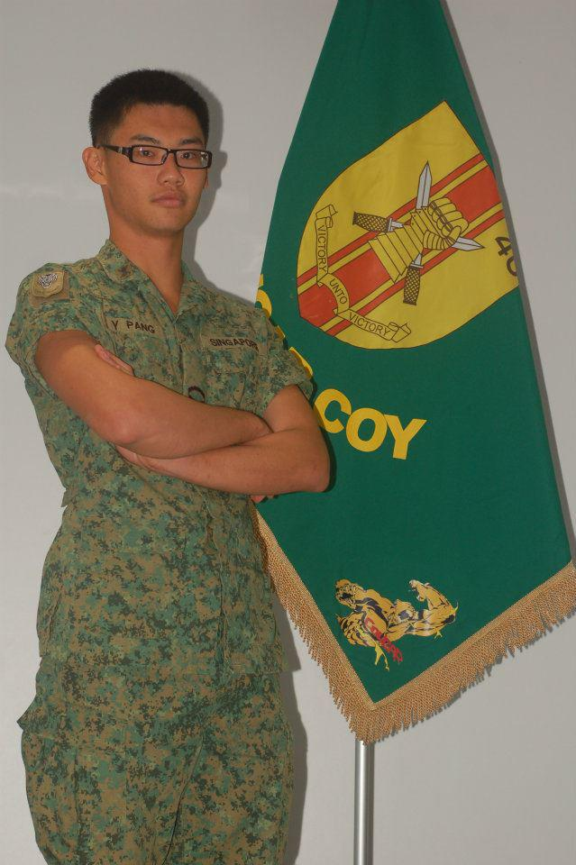

David Hughen
Project Manager
- Major: Computer Information Systems
- Minor: Bible
- Hometown: Pensacola, FL
- Favorite Bible verse: Romans 8:28 - "And we know that all things work together for good to them that love God, to them who are the called according to his purpose."
- Interests: Weight-lifting, bowling, golfing, programming
- Favorite PCC Tradition: Presidential Prerogative
- Favorite PCC Class: American Government
- Favorite Quotation: "If we ever forget that we are One Nation Under God, then we will be a nation gone under." -Ronald Reagan
- Interesting fact about me: I consume roughly 6 cups of coffee daily
Jake Stevens
Assistant Project Manager
- Major: Computer Information Systems
- Second Major: Computer Science and Software Engineering
- Minor: Math
- Hometown: Cloquet, MN
- Favorite place on campus and why: My room; it has my bed.
- Favorite Bible verse: Psalm 34:8 - "O taste and see that the Lord is good: blessed is the man that trusteth in him."
- Hobbies/interests: Building computers, building software, football, tennis, and sleeping as much as I can (not much)
- Advice for future programmers: Pointer arithmetic!
- Favorite PCC class I have taken: Computer Architecture
- Class I am excited about this semester: Systems Design
- Non-class-related activities I am involved in: Work at DC
- How I spend my free time: What?
- People would be surprised to know that I love wakeboarding.
Andrea Setiawan

Secretary
- Major: Computer Information Systems
- Minor: Management
- Hometown: Jakarta, Indonesia
- Favorite Bible verse: Proverbs 3:5 - "Trust in the Lord with all thine heart; and lean not unto thine own understanding."
- Interests: Asian foods <3
- Favorite PCC Class: Web Programming
- How I spend my free time: Taking a nap, since I don't have a day to wake up without setting my alarm on this semester :(
- People would be surprised to know that I was born on January 1st.
Cody Carr

Scheduler
- Major: Computer Information Systems
- Minor: Management
- Hometown: DeWitt, IL
- Favorite Bible verse: Psalm 37:23 - "The steps of a good man are ordered by the LORD: and he delighteth in his way."
- Interests: Playing saxophone, golfing, racquetball
- Favorite PCC Memory: Becoming class champions and world champions in the Business Strategy Game, increasing our company stock price to $528.
- Favorite PCC Class(es): Corporate Finance II/Teachings of Jesus. Ironic, because (the management of) finance is a major teaching of Jesus.
- People would be surprised to know that I started college in Electrical Engineering, changed to Computer Information Systems and Management, and will take a career in financial advising.
- Favorite Quotation: "By perseverance the snail reached the ark." -Charles H. Spurgeon
Victor Jereza

Horde Member 5
- Major: Computer Information Systems
- Minor: Bible
- Hometown: Mississauga, Ontario
- Favorite Bible verse: Isa. 12:2 - "Behold, God is my salvation; I will trust, and not be afraid: for the Lord Jehovah is my strength and my song; he also is become my salvation."
- Interests: Cooking, Tennis, guitar, photography
- People would be surprised to know that: I am a Tri-citizen of Canada, US, and Philippines
- How I spend my free time: I play Tennis
- Interesting fact about me: I suffer from Keloidal scarring (I over-regenerate!)
- Favorite Quotation: "Woman was taken out of man; not out of his head to top him, nor out of his feet to be trampled underfoot;
but out of his side to be equal to him, under his arm to be protected, and near his heart to be loved” - Marguerite De Valois
EnYang Pang

Horde Member 6
- Major: Computer Information Systems
- Second Major: Computer Science and Software Engineering
- Place of Birth: Singapore
- Hometown: NULL
- Interests: Volleyball
- Fun Fact: I have been to 19 different countries.